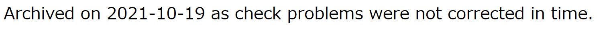
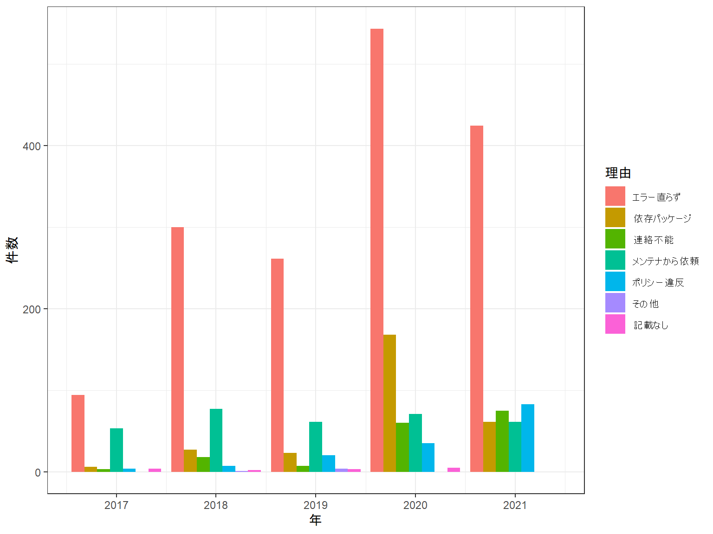

Rのパッケージはどのくらい
Archiveされているか？
niszet
2022/01/29
なまえ : niszet
R歴 : 5年目?の初心者
Twitter : @niszet0
GitHub : https://github.com/niszet
今年はPandocの活動を再開したい
年末年始にOSSのセキュリティや継続性の話題があった。
故意・過失でバグの混入は起こり得る
開発者・メンテナが力尽きてしまうケースも。
RもCRAN登録時や更新時にはチェックが入るが、処理内容の妥当性は保証されない。
関数の挙動やパッケージのコードをそれぞれ確認して対策しましょう
毎年沢山のパッケージがArchivedになっている
今回は以下を調べた
コードは後日公開
CRANには欲しい情報のリストそのものはなさそう
CRANのページをスクレイピングして集める
Available CRAN Packages By Name
ArchivedにあってAvailableにないものが”削除されたパッケージ”と判断できる。
削除されたパッケージは本来パッケージがあったページに日付とその理由が書いてある。
例:

日付がない時はhtmlのヘッダ情報から抽出
意外と理由は自由記述だった。typoもある。
理由は独断と偏見で7項目に分類した（手作業）
## [1] "利用可能なパッケージの数"## [1] "18716"## [1] "アーカイブにあるパッケージの数"## [1] "18019"## [1] "削除されたパッケージの数"## [1] "3812"## [1] "全パッケージ数"## [1] "22528"## [1] "削除されたパッケージ数/全パッケージの数x100%"## [1] "16.9%"| 2017 | 2018 | 2019 | 2020 | 2021 | 2022 |
|---|---|---|---|---|---|
| 164 | 432 | 379 | 882 | 703 | 46 |
2020年、2021年が特に多い
| 2008 | 2009 | 2010 | 2011 | 2012 | 2013 | 2014 | 2015 | 2016 |
|---|---|---|---|---|---|---|---|---|
| 101 | 54 | 66 | 72 | 218 | 219 | 262 | 144 | 70 |

毎年数百のライブラリがアーカイブへ
理由は”エラー”が多いが、連絡不能なども一定数ある
OSS開発者・メンテナの方に感謝…！